ΗΘΗ - ΕΘΙΜΑ - ΔΙΑΣΚΕΔΑΣΗ
Γαμήλιο έθιμο στην Μυτιλήνη (Χορός στο ταψί)

Λάδι σε καμβά 60*80 εκ.
Τα τελευταία χρόνια όλο και πληθαίνουν τα νέα παιδιά που αποφασίζουν να τελέσουν έναν παραδοσιακό γάμο.
Γαμήλια έθιμα που συναντάμε ακόμα και στα ομηρικά χρόνια, όπως το σμίξιμο της νύφης με τις φιλενάδες της την παραμονή του γάμου, που ακούμε σήμερα σαν “κρεβάτι μπάλος”.... Τα προζύμια και το ζύμωμα των γαμήλιων άρτων, που απαντάμε με την ονομασία “προβέντα, κουλούρα, τσουρέκι, γαμοκούλικο”.....
Η γαμήλια τελετή αποτελεί λοιπόν μια διαβατήρια τελετουργία, και σηματοδοτεί την έναρξη της νέας ζωής.
Έτσι λοιπόν το φθινόπωρο του 2018 στο χωριό Αγία Παρασκευή της Λέσβου τελέσθηκε ένας παραδοσιακός γάμος, τον οποίο και μου περίγραψε η συγγραφέας κα Μάγδα Αναγνωστή και εγώ προσπάθησα να αναπαραστήσω με χρώματα στον καμβά.
Έτσι ζωγράφισα την στιγμή που ο γαμπρός χόρεψε στο ταψί το οποίο κρατάνε ψηλά τρεις άντρες....
Στα αρχαία χρόνια οι Σπαρτιάτες πολεμιστές έπαιρναν το χρίσμα όταν τους ανύψωναν οι συνάδελφοί τους πάνω στην ασπίδα.....
Οι Ρωμαίοι αυτοκράτορες ανυψώνονταν θριαμβευτικά πάνω στις ασπίδες των στρατιωτών πράγμα που επικύρωνε την ανακήρυξη τους.
Η ανάδειξη των αυτοκρατόρων του Βυζαντίου “μέλλοντος χρισθήσεται Βασιλέως επί ασπίδα καθεσθέντος”.
Έτσι λοιπόν η συνήθεια της ανακήρυξης των ηγητόρων όρθιων πάνω στην ασπίδα ως αφηρωϊσμός εν ζωή, πέρασε στο τελετουργικό του γάμου ως δοκιμασία του γαμπρού με το “χορό στο ταψί”.
Απόκριες από τα παλιά στο χωριό μου (Σκυλαριό)
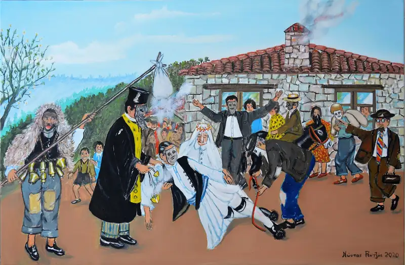
Ithi και έθιμα έρχονται και ξαναέρχονται μπροστά μου.... Το “σκυλαριό” ένα έθιμο από “τα παλιά”, μια αποκριάτικη Διονυσιακή παράσταση που κράτησε μέχρι και τη δεκαετία του εξήντα. Παρουσίαζε ένα χωριάτικο γάμο και οι συντελεστές ήτανε μασκαρεμένοι κάτοικοι του χωριού. Αυτός ο θίασος “οι σκυλαραίοι” έδιναν σε κάθε σπίτι ή σε κάθε αυλή ανάλογα με τον καιρό την παράσταση τους. Πολλές φορές περιόδευαν και σε όμορα χωριά. Κέφι, χορός, πειράγματα, ξεφάντωμα, ανάσα δροσιάς στον επίπονο βίο των ξωμάχων.....
Κάλαντα
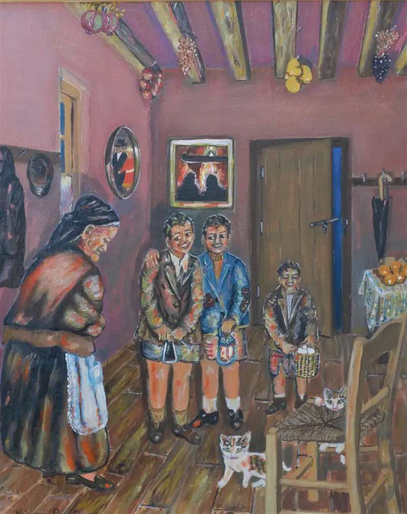
Λάδι σε καμβά 50*40 εκ.
Πανηγύρι στο ξωκκλήσι
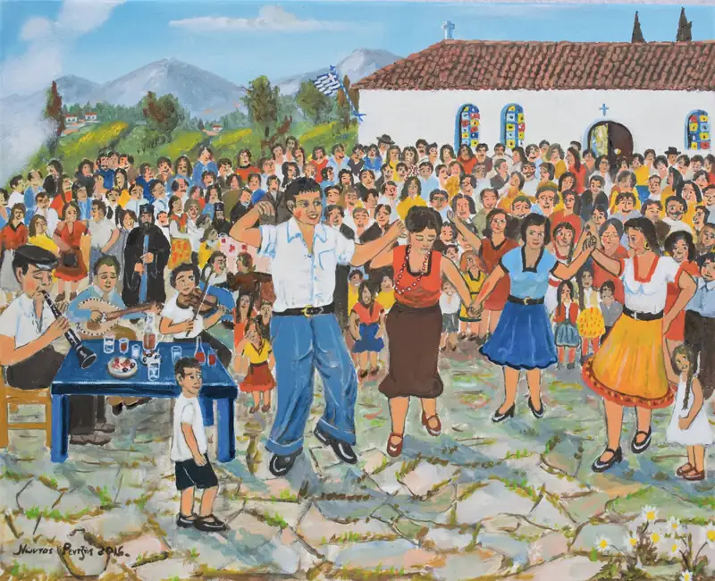
Λάδι σε καμβά 40*50 εκ.
Βάπτιση
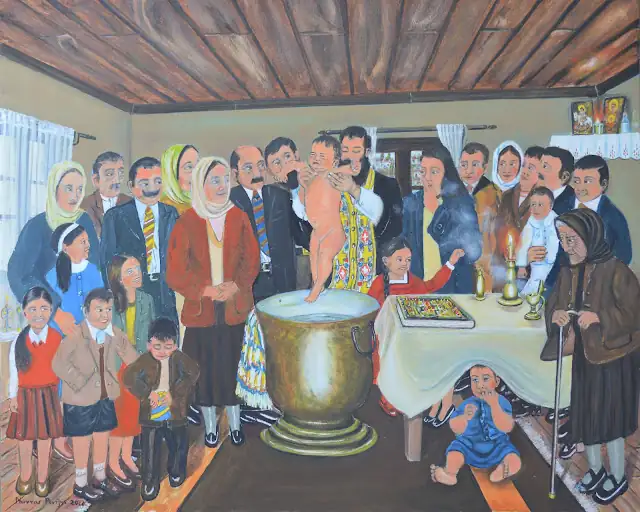
Λάδι σε καμβά 90*110 εκ.
Στις παλαιότερες εποχές, ιδιαίτερα δε στις χειμωνιάτικες μέρες, οι βαπτίσεις γίνονταν στα σπίτια επειδή οι εκκλησίες δεν διέθεταν κεντρική θέρμανση...
Θυμάμαι που σαν παιδιά είχαμε αγωνία για το ποιοι θα κουβαλήσουν την κολυμπήθρα με την βοήθεια των κολυμπηθρόξυλων...
Γαμήλιο γλέντι
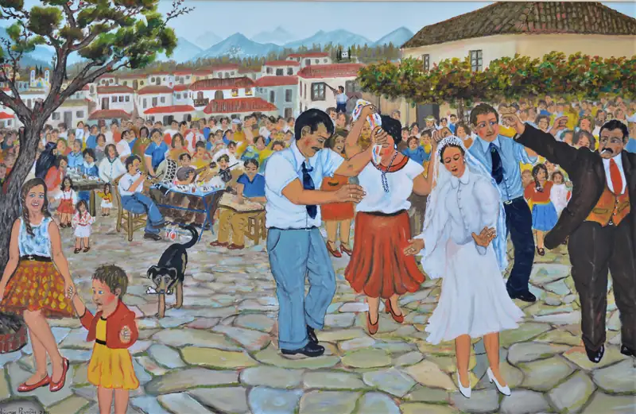
Λάδι σε καμβά 60*90 εκ.
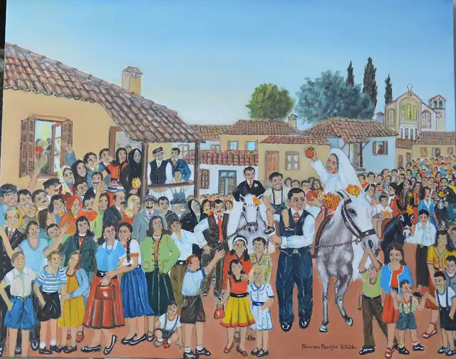
Λάδι σε καμβά 80*100 εκ.
Αρκουδιάρης
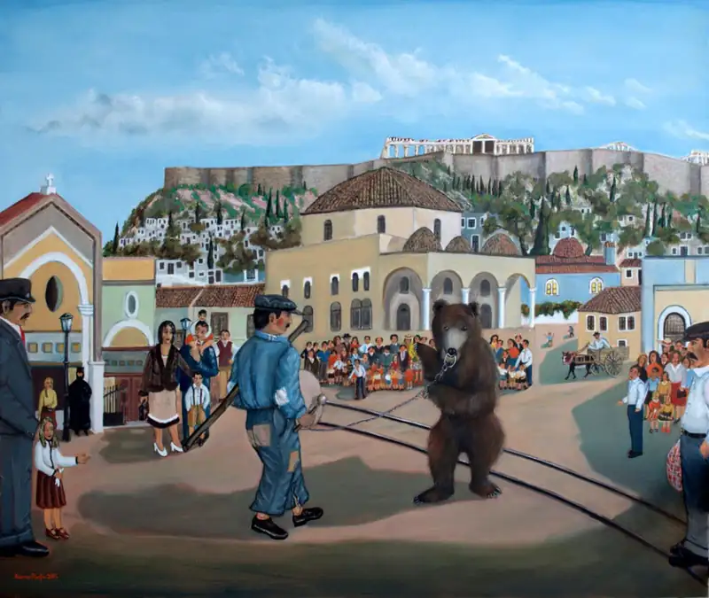
Λάδι σε καμβά 100*120 εκ.
Θερινή παράσταση Καραγκιόζη
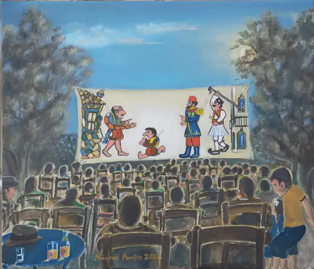
Λάδι σε καμβά 50*60 εκ.
Ο Καραγκιόζης, κεντρικός χαρακτήρας του παραδοσιακού τουρκικού κι ελληνικού θεάτρου σκιών, διδάσκει στους θεατές τον διάλογο, το παζάρεμα, τις έξυπνες ατάκες και το λογοπαίγνιο της ετοιμολογίας, προσφέροντας χαρά σε μικρούς και μεγάλους. Πρόκειται για πολύτιμη κληρονομιά που δεν πρέπει να χαθεί γιατί ο ήρωάς της αποτελεί τον καθρέφτη της γνήσιας ελληνικής ψυχής.
Απογευματινή μελωδία
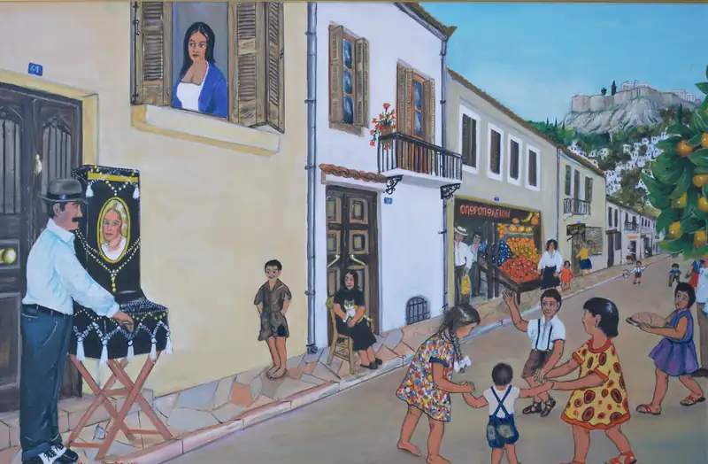
Λάδι σε καμβά 60*80 εκ.
Τσιγγάνες
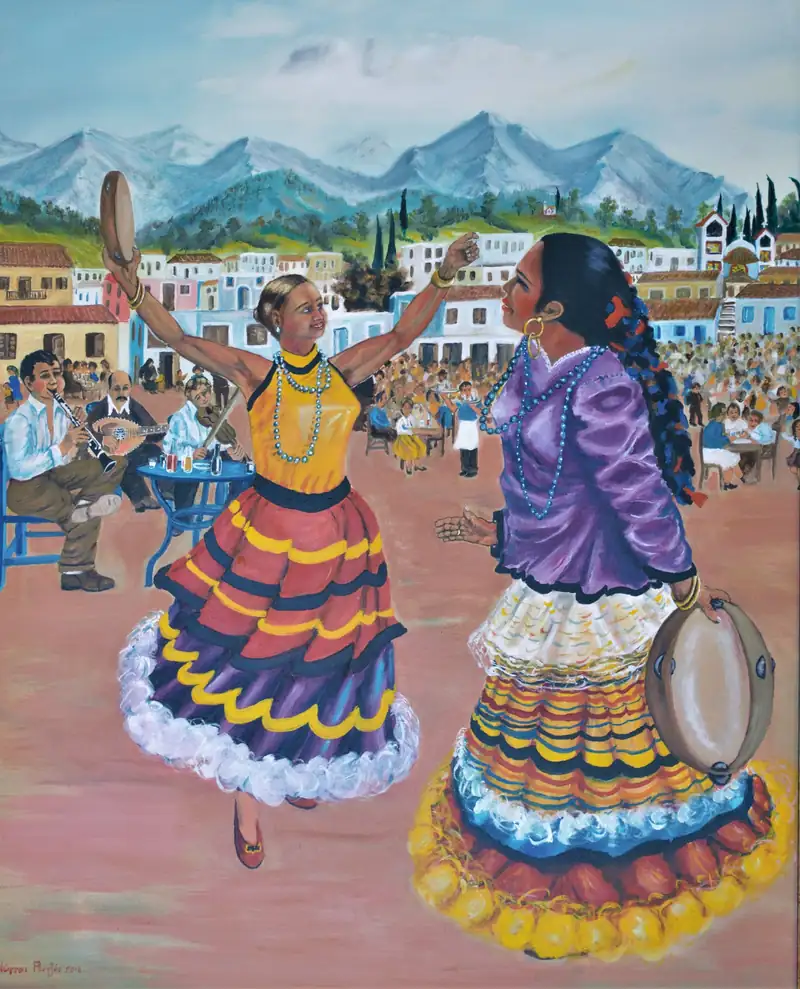
Λάδι σε καμβά 100*80 εκ.
Γλέντι
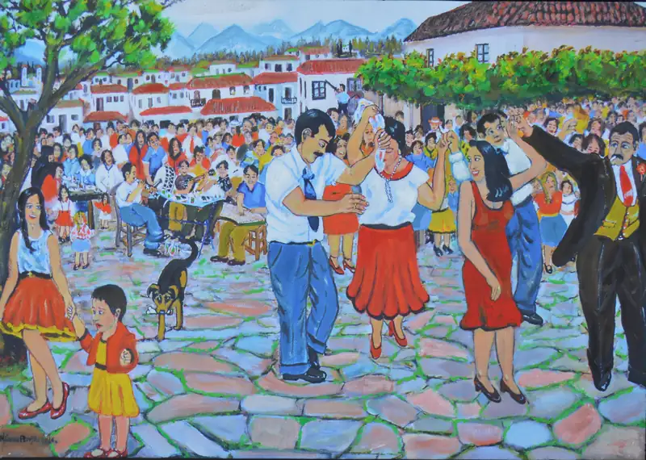
Επίδειξη με μαϊμού
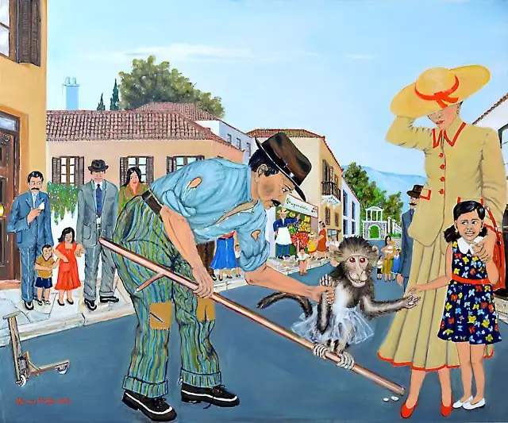
Λάδι σε καμβά 100*120 εκ.
Χασαποσέρβικο
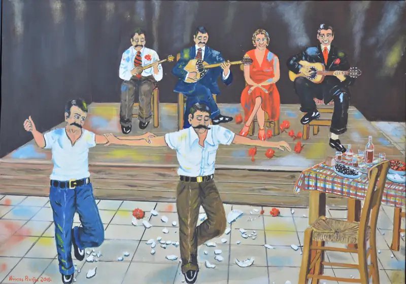
Λάδι σε καμβά 60*80 εκ.
Ζεϊμπέκικο
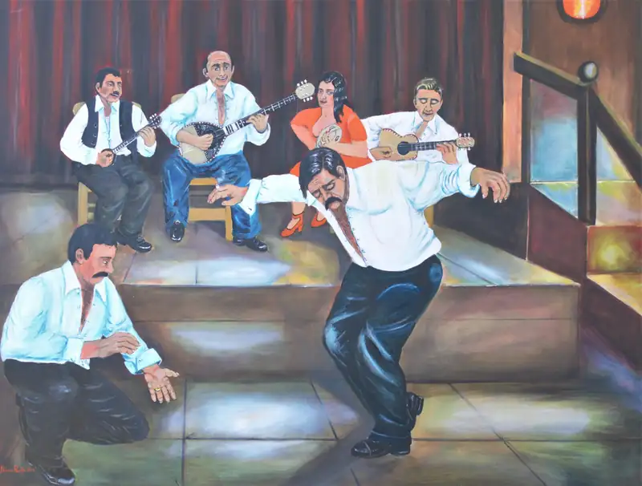
Λάδι σε καμβά 90*120 εκ.
Κρυφτούλι
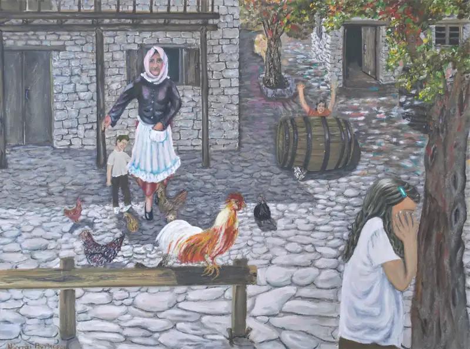
Λάδι σε καμβά 60*80 εκ.
Φάση αγώνα μεταξύ Ολυμπιακού και ΑΕΚ
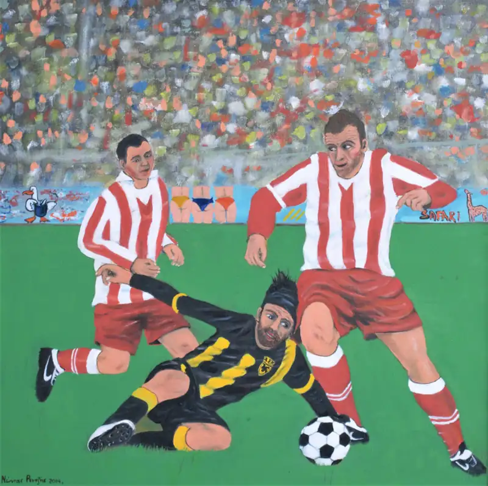
Απολαμβάνοντας το καφεδάκι
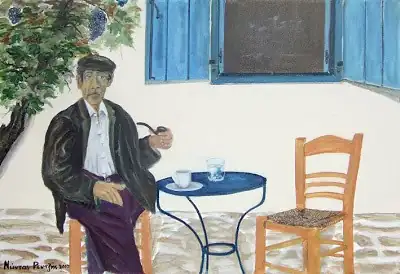
Λάδι σε καμβά 35*50 εκ.